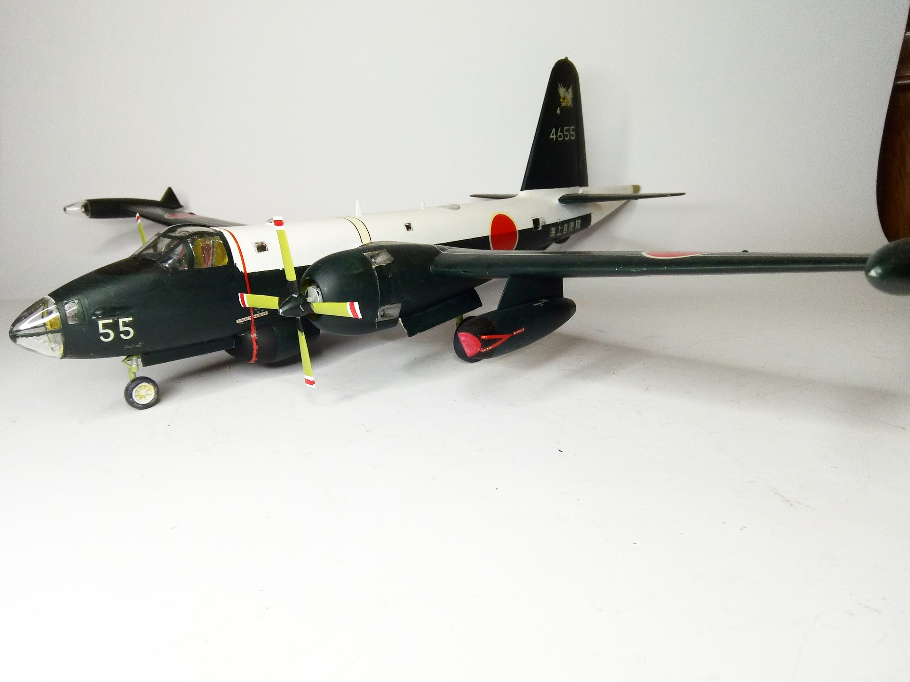
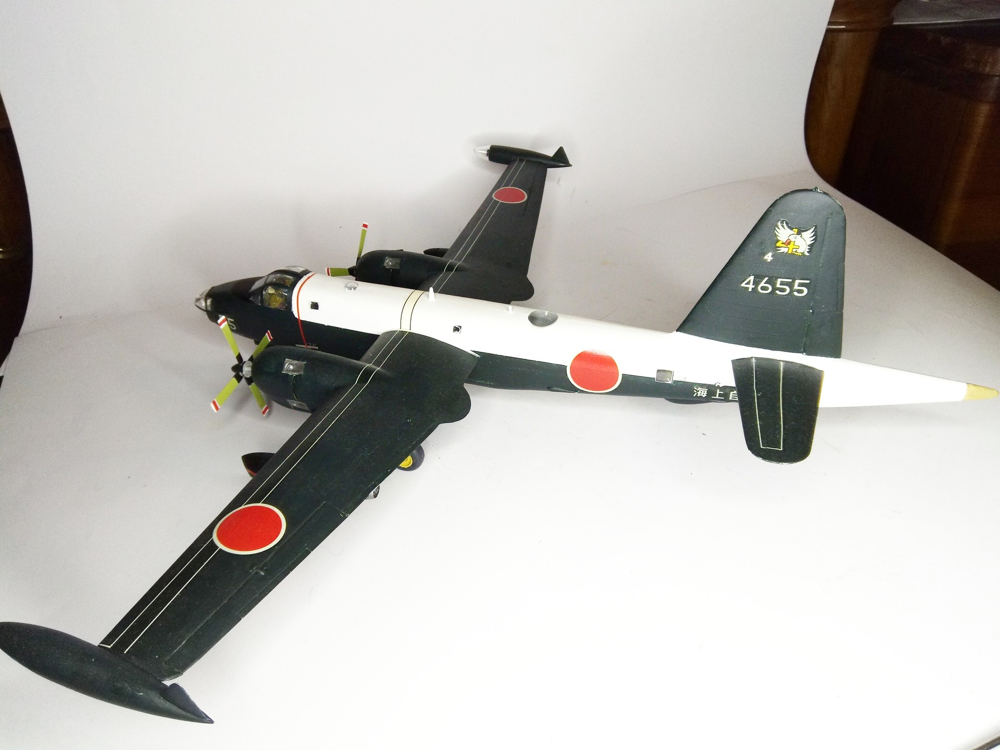

Aerei · scale model archive
Lockheed P-2H Neptune
Lockheed P-2H Neptune — Kit: Hasegawa, Scale: 1/72. 4th Wing 3rd Squadron Big model and eye-catching livery #1/72 #Hasegawa #Neptune

Photo gallery

English description
4th Wing 3rd Squadron
Big model and eye-catching livery
#1/72 #Hasegawa #Neptune
Descrizione italiana
4th Wing, 3rd Squadron. Modello grande e livrea molto appariscente.